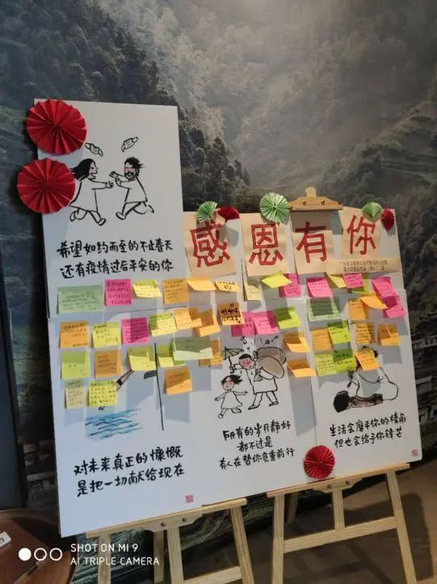
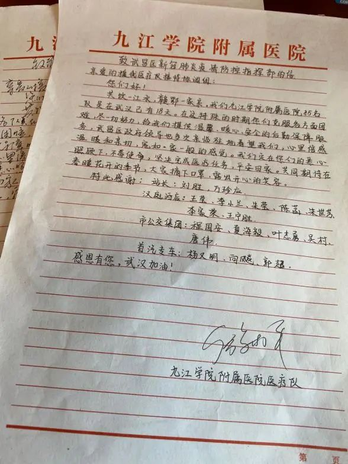
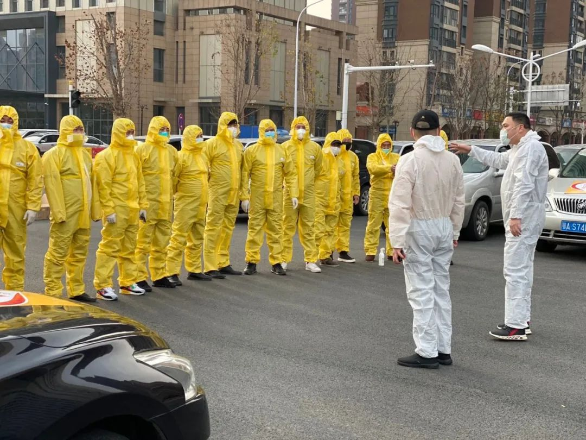
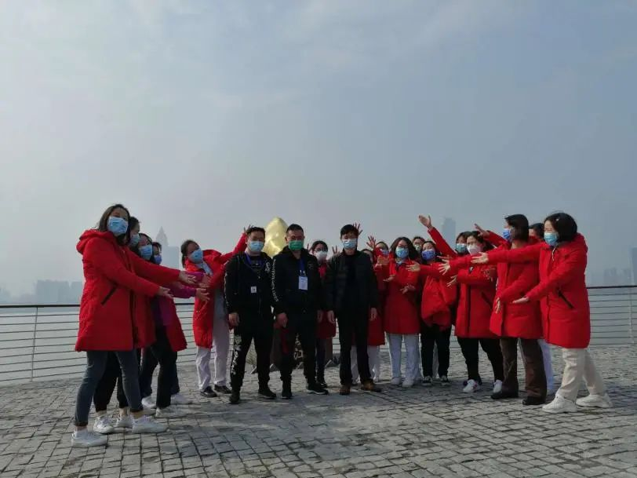
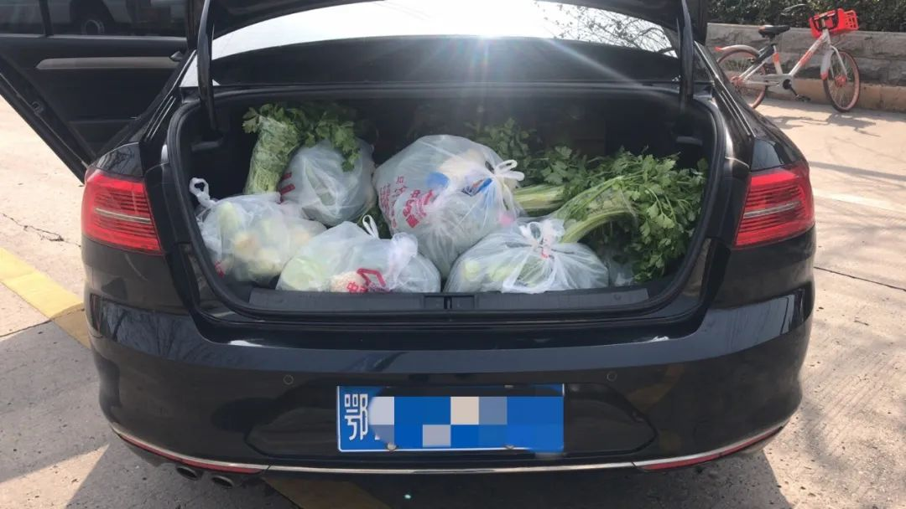
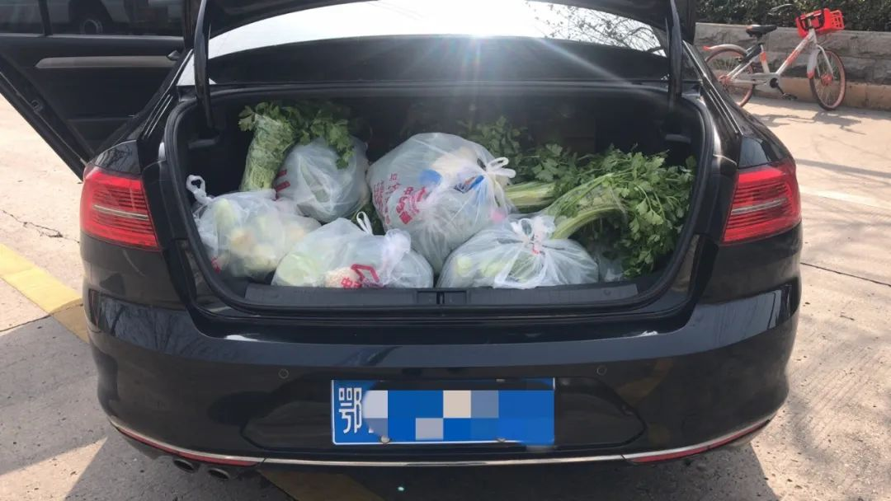
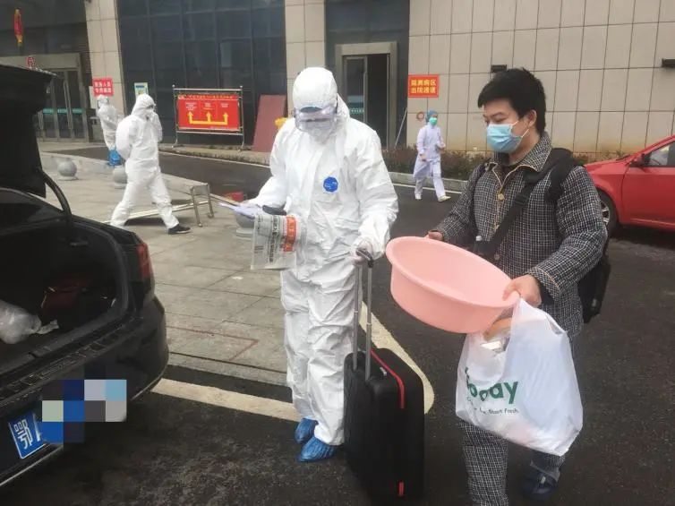
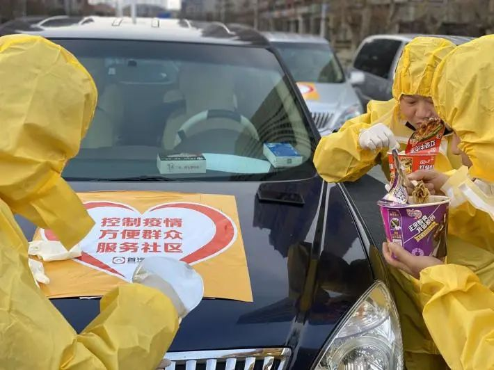

三万武汉医护人员的理发师
原文链接 备份链接 口述 ：Johnny 采访、文 ：杨溪 “ 我们的目的和初衷是希望在安全的情况下，尽可能保留医护人员漂亮的一面。很多医护人员中途就又打电话联系我，说上次头发剪完了想再修一修，我就回去再帮他们重新设计，修剪一下。他们说已 …

面对这次的疫情大考
首汽约车成为了一个散发微光的聚力平台
“日月同光，粤汉同心！谢谢你们！”
“感谢你们不辞辛苦，像家人一样照顾我们！等疫情结束有机会一定要来广东玩！”
“谢谢司机大哥们日夜兼程，耐心体贴，让我们上下班路上也不孤单，温暖如初。”
这是广东佛山援鄂医疗队在离开武汉的前一晚，偷偷在酒店大厅做的“感谢墙”上的文字。当所有人都在对援鄂医疗队致以谢意的时候，他们却以这种方式，对武汉志愿者、首汽约车驾驶员和酒店工作人员进行了“深情告白”。

广东佛山援鄂医疗队为志愿服务者们特意做的“感谢墙”
在过去50多天的时间里，除了这些奋战在一线的医护人员，无数企业和更多像志愿者、首汽约车驾驶员一样的普通人，都加入到了抗“疫”的第一线，他们在自己的岗位上不辞辛苦，共同为这座城市点亮前行的路。
为了了解他们与这座城市的故事，过去几天，我们找了几位首汽约车的司机聊了聊，有许多感动，还有更多期待。
再想到我们的时候，
希望他们的回忆中有武汉最美的样子
杨义明在首汽约车做专车司机有些年头了，这次加入首汽约车组织的“外地援汉医疗队保障团队”，也是他主动报的名。
“收到志愿车队邀请函的时候，儿子第一个不同意。”杨义明的儿子去年刚刚当兵回来，在疫情初期就成了志愿者，他知道儿子担心家里两个人万一都染上病，妻子可能无法承受这个结果。
“吉人自有天相。再说，要是人人都怕，不是没人来干这个事了吗？”凭借这个理由，杨义明勉强说服了家人，开车四十多公里从孝感赶往武汉。2月21日，首汽约车安排他和另外两名驾驶员为江西第九批援鄂医疗队和江西赣州医疗队做后勤保障工作。

江西医疗队为杨义明他们写了手写感谢信
两个医疗队，170个人，除了正常上下班有两辆大巴接送外，其他时间医护人员用车和运送物资全靠他们三个，算下来平均每人每天要跑300公里，“跑得快一点、时间长一点，三个人也没什么问题。”
杨义明口中的“时间长”，不仅仅是指需要24小时随时待命，还包含比以前更复杂的“洗车”时间。
往常一天一次的清洁，如今接送一次医护人员就要立即用酒精消毒，车内经常被碰触到的内外门把手、车窗升降钮、头枕前后等位置，他更是耐心地反复擦拭好几遍，“不仅为了医护人员，也是对自己和家人负责。”
用来给车消毒的酒精等防疫物资，是杨义明在加入首汽约车保障团队前的培训上领到的。为这些奔波在一线的驾驶员提供消毒防护用品，保障他们的健康和安全，是首汽约车目前最关注的一件事。因此，除了为司机们发放口罩、防护服、护目镜和酒精之外，首汽约车还为他们准备了一份保护全面的商业保险。

保障车队人员整装待发
“现在我们没那么忙了，证明治愈人数越来越多，接送医疗队的时候能感受到他们的开心。”杨义明的声音里带着一丝愉悦，“之前忙的日子，总有医护人员坐车的时候对我道谢，可我们做好后勤保障是应该的，和他们的工作比根本算不上辛苦。”
采访杨义明的那个下午，武汉正是春光明媚的好时候，他服务的两个援鄂医疗队也在连续工作20多天后，有了停歇安顿等待调动的一天休息日。

3月13日，江西医疗队组团去武昌江滩放风。医疗队队员把杨义明他们三个人簇拥在中间，拍照留念。
“他们说想‘看看武汉的样子’，现在正是樱花开的时候，我带他们来看看，这座被守护了这么久的城市，本来该有的美好。”为了满足医护人员们提出来的“小心愿”，他与同伴们在江滩边上，静候着不远处医护人员们赏景归来。
安全送走医疗队，
接下来的任务就是把治愈的人送回家
杨义明载着医护人员往返在武汉街头的时候，班超作为首汽约车武汉分区的城市经理，也已经支援“战疫”工作57天了。
1月24日晚上十点，正在和家人吃年夜饭的他，收到了来自武汉市客运汽车出租管理处和首汽约车领导的电话，不同的人诉说着同一个任务——紧急召集首汽约车的驾驶员，组建志愿者车队，保障武汉市民的日常出行需求。
挂掉电话的下一秒，班超就马不停蹄地忙碌起来，组建管理团队，分头招募驾驶员志愿者、寻找防疫物资、对接社区。大年三十的晚上，8个人的小团队熬夜对接调配，仅用了8个小时，就招募到502名驾驶员。
 

为社区居民运送的团购菜 图源首汽驾驶员弓勇风
25号早上，第一批首汽约车志愿者紧急培训后立刻投入了工作，然而，这场战“疫”才刚刚开始。
保障居民的正常生活，守护他们的健康，是首汽约车和驾驶员们主动扛起的一份责任。班超常常听到驾驶员“买的生活用品堆满了后备箱和后排座椅”、“背着近百岁的老人上下楼、去医院就诊”，或者“产妇突然在车上发作，最后送到医院顺利生产”的事情。
司机慢慢适应了这样的工作节奏，又接到了新任务——承接武汉市所有外地援汉医疗队的出行保障，以及6家医院治愈患者的出院接送工作。

在江夏第一人民医院接康复病患出院
“听说是因为我们在前期防疫工作做的好，上边才又给了我们新工作。虽然累，但是挺光荣的。”据班超介绍，有了前面的经验，这次不管是招募驾驶员还是筹备物资，进行的都格外顺畅。
不过，有些问题还是难以避免。“疫情最重的时候，志愿者每天接触生离死别，各方面压力都很大。”为此，班超在6天时间内跑了200多个社区工作点，对驾驶员进行心理安抚，“有一次和他们聊到家里，彼此都哭了。说实话，看到那些数据和新闻，谁不害怕？自己被感染还好，万一传染给家人怎么办。”
班超不仅要承担所有人的负面情绪，自己的生活也没能料理好。由于武汉市酒店在疫情期间只接受政府调配，因为工作而无法回家的他“在办公室、车里、政府大楼都住过”，只不过“不敢和家里说，怕他们担心”。

“做志愿司机这段时间，我吃遍了各种口味的泡面。”图片来源班超
现在回想起来，那段日子大概是最难的时候，“我车上贴了‘志愿者交通运输保障’的标识，停车休息时有人敲窗，把家中最后两盒口罩捐赠给了我。”这份来自陌生人的温暖，成了他继续前行的动力。
2月底的时候，班超终于被安排住进了酒店，一切都在向好的方向转变，“如今治愈人数多了，人们的出行需求也变多了，我们的工作量越来越大，挺好的。”
履行社会责任，彰显榜样力量
班超接到任务的那个晚上，首汽约车公司上下也为了全面配合疫情工作而忙碌起来。
1月24日，召集了502名首汽约车驾驶员，为221个社区站点服务；
2月10日，在全国44个主要城市设置了200余座固定消毒站，提供消毒服务；
2月16日，集结600名首汽约车驾驶员，为所有外地援汉医疗队入驻的145家酒店和6家医院的治愈患者提供出行保障；
2月25日，为运营车辆配备了红外体温检测仪和拥有智能感应的紫外线设备，保障复工出行安全…
疫情就是命令。在过去50多天的时间里，首汽约车不仅从自身业务出发迅速响应，为市民和医护人员提供出行服务，打通救援的生命线，还主动参与到城市战“疫”防控任务中，为守护我们的城市默默贡献着力量，彰显出企业担当和社会责任感。

首汽约车的司机们正在待命
一直以来，首汽约车始终以服务社会、回馈社会为使命。在这个平台上，从管理层到驾驶员师傅们，大家都坚信只有为社会创造价值，才是一家受大众喜爱的企业，而企业也会因这种向善的力量而得到更长远的发展。与责任同行，面对这次的疫情大考，首汽约车就像是一个散发微光的聚力平台，用实际行动和影响力带动和汇聚了更多人加入支援行动，诠释着新时代城市榜样的力量。
在采访中，首汽约车的司机们也反复提到，疫情的到来或许改变了他们的工作内容，增加了他们的工作强度，但没有变的，是那份责任初心和对于城市的爱，“让这座城市好起来，一切付出都是值得的。”
如果说那些逆行的医护人员将这座城市慢慢治愈，那首汽约车和驾驶员们，就在用自己的方式，守护和见证着这座城市不断前行。相信这些源源不断的善意，一定可以让我们的城市变得更加美好。
除注明外，其他图片来源为首汽约车
本文仅代表作者观点，不代表本刊立场
推荐阅读
▼
国际公共卫生专家：美国疫情防控迎来转折点，未来几周病例会迅速上升


原文链接 备份链接 口述 ：Johnny 采访、文 ：杨溪 “ 我们的目的和初衷是希望在安全的情况下，尽可能保留医护人员漂亮的一面。很多医护人员中途就又打电话联系我，说上次头发剪完了想再修一修，我就回去再帮他们重新设计，修剪一下。他们说已 …
原文链接 备份链接 非常时期 他们的存在是照亮黑暗的光在武汉坚守工作岗位的普通人 户外探险队志愿者大象，打开后备箱，打开一个水果罐头，将糖水一饮而尽。 1月23日武汉封城，1月26日，武汉实行中心城区机动车禁行管理，出租车停运，医护人员的 …
原文链接 备份链接 心理医疗队在疫情发生一个多月的时间点来武汉，时机很好，我们希望在疫情还没有结束的应激期，帮助他把焦虑缓解下来，以免造成长期影响。 记者 | 黄 祺 武汉新冠肺炎疫情一个多月后，以精神科专科医生为主要成员的心理医疗队，由 …
原文链接 备份链接 每个人用自己的方式在守护 为武汉，也为自己 凌晨四点，梦乡深处的人们是否想过，此时的武汉，此时的协和医院，是怎样的场景。 截至2月19日，武汉协和医院西院累计收治新冠肺炎患者1055名，其中重症、危重症患者占 …
原文链接 备份链接 有救援经验的社会组织，响应了。 武汉宣布封城后三小时，郝南就在社交媒体上发布了nCOV Relief（后改名NCP生命支援）志愿者招募书，发起新冠肺炎患者和疑似病人居家隔离治疗项目。郝南身在北京，是卓明灾害信息服务中 …